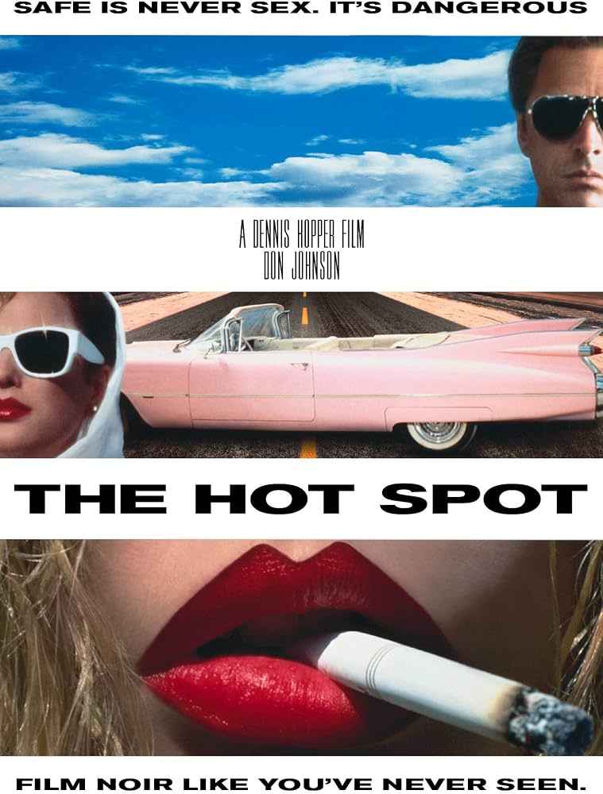
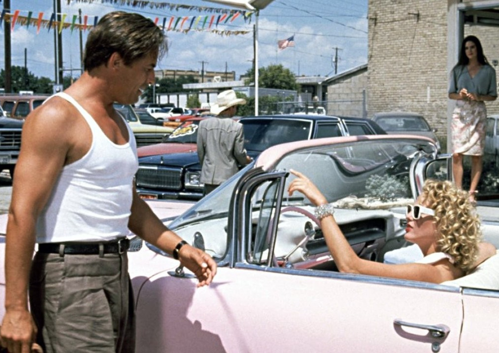
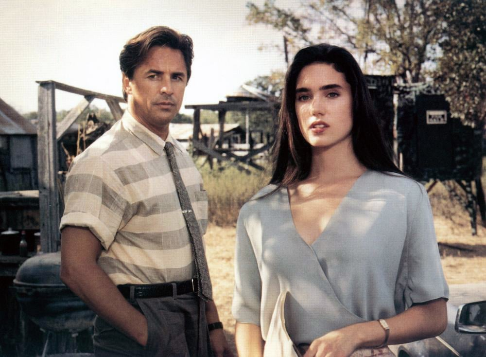

Celui-là, je l'ai cherché.
Après Harley Davidson et l'homme aux santiags, Don Johnson était devenu un nom que je gardais en tête — cette manière qu'il avait de porter un film crépusculaire sans jamais forcer le trait. Alors j'ai fait ce que je fais depuis le début de cette série : j'ai creusé sa filmographie, pour voir ce qu'il avait fait d'autre dans cette période de reconversion post-Miami Vice.
The Hot Spot est apparu assez vite. Un néo-noir, réalisé par Dennis Hopper en personne, avec Don Johnson en tête d'affiche.
Je n'en attendais rien de précis. Juste la curiosité de le revoir dans un registre différent de celui qui m'avait accroché la première fois.
Ce soir, deuxième halte du fil Don Johnson.

The Hot Spot — affiche, 1990
The Hot Spot.
1990. Réalisé par Dennis Hopper. Avec Don Johnson, Virginia Madsen et Jennifer Connelly.
Adapté du roman noir de Charles Williams, "Hell Hath No Fury", le film s'inscrit dans la tradition du néo-noir texan — chaleur étouffante, désir trouble, et une petite ville où tout le monde cache quelque chose.
Produit de façon indépendante, sorti confidentiellement en salles aux États-Unis.
Don Johnson y incarne un étranger de passage qui débarque dans une bourgade texane, décroche un emploi de vendeur de voitures, et se retrouve rapidement pris entre deux femmes, une combine de casse de banque, et une ville qui ne pardonne jamais rien.
Dennis Hopper filme la chaleur comme une pression constante, presque palpable.
The Hot Spot est de ces films qui prennent leur temps pour mieux vous piéger.
1990.
Dennis Hopper vient de retrouver une légitimité de cinéaste après des années de traversée du désert — Blue Velvet en 1986 l'a remis sur le devant de la scène comme acteur, et Colors, qu'il réalise en 1988, confirme son retour derrière la caméra. The Hot Spot est son projet suivant, plus personnel, plus proche du film noir classique qu'il admire depuis toujours.
Le scénario adapte "Hell Hath No Fury", un roman de Charles Williams qui traînait dans les tiroirs hollywoodiens depuis des décennies — Robert Mitchum avait un temps envisagé de le porter à l'écran dans les années 60. Hopper reprend le projet et l'ancre dans un Texas suffocant de chaleur, presque un personnage à part entière.
Pour Don Johnson, le film arrive au moment charnière de sa carrière. Miami Vice vient de s'achever après cinq saisons, et l'acteur cherche activement à se détacher de l'image du flic élégant qui l'a rendu célèbre. Comme dans Harley Davidson et l'homme aux santiags, il choisit un rôle trouble, ambigu, loin de tout héroïsme facile.
Face à lui, Virginia Madsen et une toute jeune Jennifer Connelly, encore au tout début de sa carrière adulte.
Particularité notable : la musique du film est composée par Miles Davis et John Lee Hooker — une bande-son blues et jazz qui infuse chaque scène d'une tension moite, presque charnelle.
Production indépendante, budget modeste, sortie confidentielle par Orion Pictures.

Don Johnson — The Hot Spot, 1990
Harry Madox débarque dans une petite ville du Texas sans passé qu'on lui connaisse, et sans intention d'y rester longtemps.
Il décroche rapidement un emploi de vendeur dans une concession automobile locale, où il rencontre deux femmes qui vont bouleverser ses plans discrets. Gloria Harper, la comptable timide et secrète de l'entreprise, semble porter un lourd fardeau. Dolly Harshaw, elle, mariée au patron de la concession, ne cache ni son désir ni ses intentions.
Pendant qu'il se retrouve pris entre les deux, Harry observe une chose qui allume en lui une idée dangereuse — l'agence bancaire de la ville, mal protégée, presque une invitation au vol.
Ce qui commence comme une opportunité facile devient rapidement un engrenage bien plus complexe. Chantage, secrets de famille, jalousie — la ville entière semble receler bien plus de noirceur que sa façade tranquille ne le laisse deviner.
Harry pensait pouvoir entrer, prendre ce qu'il voulait, et repartir sans laisser de trace.
Le Texas, et ses habitants, ont d'autres projets pour lui.
The Hot Spot est un film qui respire la chaleur avant même de raconter quoi que ce soit.
Dennis Hopper construit chaque plan autour de cette sensation physique — l'air qui tremble, les corps qui transpirent, une lumière blanche et écrasante qui ne laisse aucun répit. Cette chaleur devient une métaphore directe du désir qui traverse le film : tout est trouble, moite, jamais tout à fait sous contrôle.
Don Johnson y trouve un rôle radicalement différent de son image post-Miami Vice. Harry Madox n'a rien d'un héros — c'est un homme opportuniste, moralement ambigu, qui se laisse porter par ses pulsions autant que par ses calculs. Johnson joue cette ambiguïté avec une économie de gestes qui rappelle son travail dans Harley Davidson — peu de mots, beaucoup de regards, une présence qui en dit plus que le dialogue.
Le film assume pleinement les codes du néo-noir le plus classique — la femme fatale, l'étranger sans passé, la petite ville qui cache ses secrets — mais les pousse vers un érotisme plus frontal que ce que le genre autorisait habituellement à cette époque. Virginia Madsen incarne cette tension sans retenue.
La bande-son de Miles Davis et John Lee Hooker n'est pas un simple habillage. Elle infuse littéralement chaque scène d'une pulsation blues qui colle à la peau des personnages.
The Hot Spot ne cherche jamais la rédemption de ses personnages. Il les regarde simplement se consumer, sans juger.

Don Johnson et Jennifer Connelly — Texas, 1990
The Hot Spot sort en 1990 dans une indifférence quasi totale, et plusieurs facteurs s'accumulent pour l'expliquer.
D'abord la distribution. Orion Pictures, qui traverse déjà des difficultés financières sérieuses à cette période, sort le film de façon extrêmement confidentielle — peu de salles, peu de promotion, une sortie presque discrète pour un film porté par un nom aussi reconnaissable que Don Johnson.
Ensuite, le contenu lui-même. Le film assume un érotisme frontal et une ambiguïté morale qui ne correspondent pas aux attentes du grand public de l'époque envers Don Johnson, encore largement associé à l'image plus lisse de Miami Vice. Ceux qui viennent chercher le charme sophistiqué du flic de Floride se retrouvent face à un vendeur de voitures manipulateur dans un Texas suffocant — un vrai décalage d'attentes.
Le néo-noir, en tant que genre, connaît aussi un creux de popularité au tournant des années 90, coincé entre l'âge d'or du genre dans les années 40-50 et sa redécouverte critique bien plus tardive.
Et Dennis Hopper, malgré son retour en grâce avec Blue Velvet et Colors, reste un réalisateur au parcours trop irrégulier pour garantir l'attention du public sur chacun de ses projets.
Un film sorti dans l'angle mort de plusieurs attentes à la fois.
Parce que c'est un des rôles les plus intéressants de Don Johnson dans sa période de reconversion post-Miami Vice — celui où il abandonne complètement le charme lisse pour incarner une ambiguïté morale beaucoup plus trouble.
Parce que Dennis Hopper y démontre un vrai savoir-faire de metteur en scène, loin de l'image d'acteur excentrique qui lui colle souvent à la peau — la chaleur, la tension, l'atmosphère du film sont d'une maîtrise formelle qu'on associe rarement à ses projets les plus connus.
Et parce que la bande-son signée Miles Davis et John Lee Hooker mérite d'être redécouverte pour elle-même — une pièce de musique qui existe presque indépendamment du film qui la porte.
Le fil Don Johnson, entamé avec Harley Davidson et l'homme aux santiags, trouve ici son deuxième écho — un acteur qui, entre deux rôles, cherchait clairement à se réinventer.
Il y a ce plan qui revient à plusieurs reprises dans le film — Harry Madox, seul au volant, la vitre baissée, cette chaleur texane qui semble entrer directement dans l'habitacle. Aucun dialogue. Juste cette sensation d'étouffement qu'on porte avec lui jusqu'au générique.
Deuxième étape du fil Don Johnson de cette saison, et un contraste frappant avec l'icône crépusculaire de Harley Davidson et l'homme aux santiags — ici, plus d'ambiguïté encore, plus de désir mal placé, moins de retenue.
Miles Davis et John Lee Hooker continuent de jouer, quelque part, sur cette route texane qui n'a jamais vraiment de destination.
La cassette est dans le lecteur. On rembobine.
Titre original
The Hot Spot
Pays
États-Unis
Genre
Néo-noir
Durée
130 min
Producteur
Orion Pictures
Avec aussi
Virginia Madsen · Jennifer Connelly
Fil conducteur
Don Johnson — Saison 2 (2/2)
Note
Musique originale signée Miles Davis et John Lee Hooker
Regarder l'épisode
SOMEDAY — S2 EP. 07